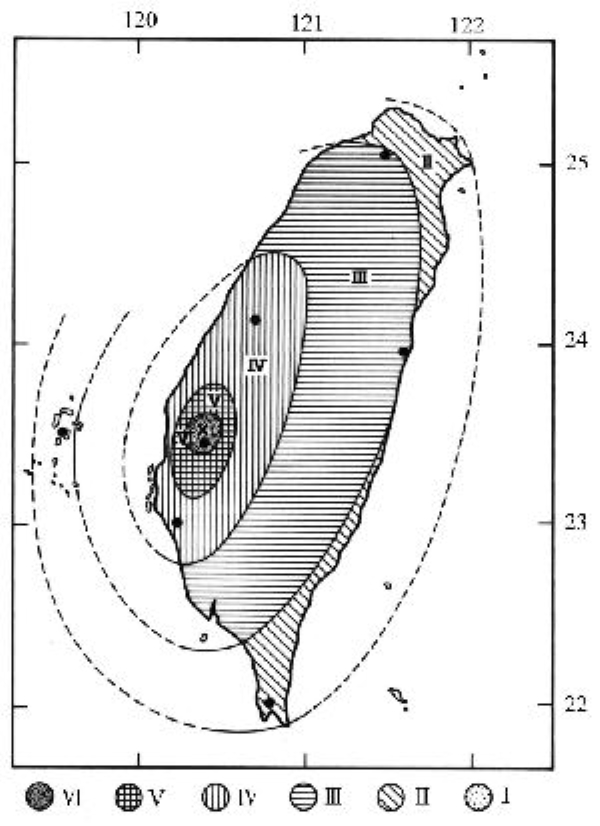

1906年 梅山地震
1906 年 3 月 17 日上午 6 時 43 分，嘉義縣梅山鄉（當時為嘉義廳打貓支廳）發生規模（ML）7.1 的強烈地震，全島皆有感，嘉義地區受災嚴重，造成超過 1200 人死亡，是台灣有紀錄以來災情第四慘重的地震。
地震概要
此次地震震央位於北緯 23.55 度，東經 120.45 度，震源深度 6 公里，地震規模為 ML7.1（CWA），Mw6.9（USGS），推測是由梅山斷層引發，破裂長度約 25 公里。
最大震度是當時的震度分級中，最高的六級（VI），

梅山地震震度圖
災情
地震造成超過 7000 棟房屋全倒， 1266 人死亡及 2476 人受傷，
參考資料